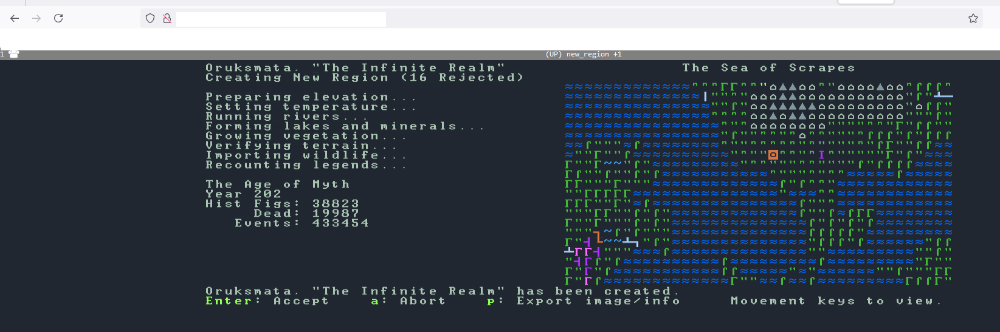
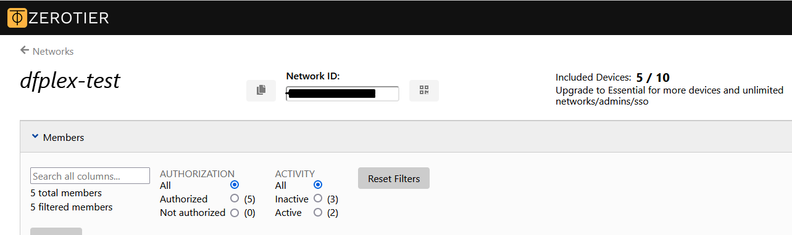

2024-12-09
Dwarf Fortress Server
If you are here just to have a quick sniff around my portfolio, I recommend only reading sections with this bookmark on the title 📚. They are more concise, to the point and have less creative writing mixed in. Likely what you are looking for.
Introduction
So, after setting up a Proxmox virtual machine, learning how to use it and having some fun with setting up an ARR stack in it, I was stricken with a big craving to play Dwarf Fortress (or, DF in short).
Since I was very excited about having set up a (albeit extremely small) homelab, I thought “why not make it a server that runs on my machine?”.
“Because Dwarf Fortress isn’t multiplayer, silly.” You might say, and you would be right! But I did it anyway.
📚 Project Overview
Dwarf Fortress is a computer fantasy simulation game. Setting it up as a server allows not only for multiplayer play (using the DFHack and DFPlex plugins), but also for safe access anywhere (using the ZeroTier networking virtualization platform), simple and easy to setup game backups, and much more.
This project demonstrates skills in
- Linux system administration (mainly Linux CLI),
- Virtualization (setting up the server on Proxmox, setting up the networks in ZeroTier, and showcasing the many ways I failed horribly before actually getting it to work)
- Programming very small Lua scripts (with barely any knowledge of lua beforehand)
- Usage of obscure software tricks and an ability to work with what I’ve got.
~Edit: I don't have time to edit this project right now, but almost a year later I came back to it and set a world-wide server for me and some friends to play in. If you trust me enough to believe this, the project technically also demonstrates skills in using OCI (Oracle Cloud Infrastructure, where I set the server up) and nginx (to manage access to my server).
📚 Technologies Used
- Proxmox (Virtualization environment): I generally have every one of my server instances set up as Linux Containers inside it, they are very resource efficient so even with the 6GB of RAM my server has everything works pretty well
- Linux (and some random libraries): Operating system for the server
- Lua: for a very small script I made.
DFPlex - Multiplayer DF
If you don’t already know, there is a multiplayer plugin for DF called DFPlex that allows you to run it as a server, and people can connect to it over a web interface. Highly recommend trying it (as playing DF with multiple people who have absolutely no clue what they are doing is even more fun than with just one person who has no clue what they are doing) - It is what I used to make this whole thing work.
Proxmox and Containers
Proxmox is a virtualization tool I use to run my home server in, and I generally use Linux Containers (LXCs) to set up my servers. If you have absolutely no idea what these are, you can very easily ignore the sections where I talk about them, taking only the knowledge that I’m running all of this on a headless Ubuntu server (so, a linux OS without any screens attached to it), and controlling it over a command line accessible through the Proxmox web Graphical Interface (WebGUI).
Setup Process
1. Proxmox Configuration
~ I won’t be detailing all the steps to set up proxmox in here. Maybe in another project.
2. Linux Installation
I created a simple Ubuntu LXC (Linux Container) mostly because I’m more familiar with Ubuntu, and there was no need to create a whole Virtual Machine to run this server in (I ended up doing it anyway for debugging purposes.)
Simply boot up a linux template on proxmox (you can install a bunch in various different ways) and you are good to go.
LXC info:
- Reasonably sure using only 1 CPU core is enough as from what I’ve read DF can’t make use of more than 1 anyway.
- 1 gig of RAM is also likely enough as DFs the bottleneck tends to be CPU.
- I can’t see a DF server needing more than 10G of disk space.
3. Dwarf Fortress Server Installation
The beginning of this process is extremely simple.
To run DFPlex, you need to have Dwarf Fortress, DFHack (a Dwarf Fortress plugin) and DFPlex (another Dwarf Fortress plugin) all set up. To do so you’d download each of these and drag them all into the same folder (DF -> DFHack -> DFPlex and merging files accordingly).
After some googling about Dwarf Fortress versions (and if on linux, after a lot of command-line magic using wgets, tars, zips and copies) you should have your game good to go.
…
Or so I believed. And that would be the case, if I was running this on a normal machine, with normal specs, a normal setup, etc - And I even did so beforehand on my machine and everything worked out perfectly (works on my machine :P) - But I’m not, and so we aren’t quite done yet.
3.1 The First Problem
Two problems were still left to be solved.
The first of them (and one I already expected I’d have), was the fact that I had no screen.
The game doesn’t run without one, and it even is so friendly as to tell you so with a 2d mode "Display not found" error. This would probably lead any sane individual into searching the problem on google, and finding out that there indeed is a “TEXT” mode you can turn on, but after trying to enable it, I got a stupid amount of dependecy errors (which I tried to solve for about an hour before deciding against it).
Its also worth noting that DFPlex runs the clients on 2D mode over a Web GUI, and I was not interested in trying to set up TEXT mode for hours only to learn that DFPlex required 2D mode anyway - So after a while I ultimately decided to try a different, more interesting method.
Since DF really wants to have a display to run on 2d mode, why don’t we give it one? Not a real display, of course, but DF doesn’t understand the difference between a real display and an emulated display, so that should work out fine - Also the server clients run on a WebGUI over my network so I as a person don’t actually need to see the DF display, I’ll do so on my own computer over the server client.
puts on sysadmin glasses fails to find a way to do it multiple times, cries, finally finds it
export DISPLAY:=1
Xvfb :1 -screen 0 1024x768x24 &
This is what I ended up going with. Emulates a screen and so now Dwarf Fortress should run without error, except…
I got a bunch of dependency errors again. . . Which is nice! Cause now I know exactly what to do. Install dependencies. For about 2 hours. I ended up finding the last answer on this page which ended up working out.
Trying to run DF again, I get a warning that the game wouldn’t be able to display sound (which makes sense, I didn’t have any sound output and also didn’t bother emulating any), and it works!
Or it says it does… but when I try to enter the ip and port to access the WebGUI on my Firefox (chrome and other browsers apparently don’t work btw) it.. still doesn’t work.
And so we head on to
3.2 The Other Problem
I was completely stumped.
searched about it for hours, re-traced my steps, tried TEXT mode again (which was a mistake.), and went onto the ultimate measure.
I created another container in Proxmox (this time an actual Virtual Machine, with all the good stuff a VM has like an actual graphical display) and set it up all over again. I’m not the best Linux CLI user so maybe there was something I was missing, and having a graphical interface to look through it might help me.
After some more hours waiting for the machine to boot, libraries to get installed, dependencies, and all the good stuff I’ve already detailed this far, I was finally able to load up the game.
Loaded up perfectly, just like on my LXC container, but when I was about to play the game, I noticed that before I could actually do that, I needed to click “OK” on a popup with the same warning I had seen (through text on the command line) before. That the game wouldn’t be able to display any sound.
Once I clicked OK, everything worked. Could even connect to it over the web interface. The popup on my headless LXC appeared on my emulated screen, so I couldn’t ever see it, but for the game to actually boot up properly I had to click on said popup.
So I spent some hours solving a problem that, in hindsight, has one of the easiest fixes possible. Just go into the game’s init.cfg file (where there are configurations like the 2D or TEXT mode I mentioned earlier) and tell it to run without sound (change SOUND:YES to SOUND:NO). If I had disabled sound beforehand I wouldn’t have known this problem had the slight possibility of even existing in the first place.
either way, now with deactivated sound back on my LXC container, I booted up the server (running the dfhack file) and it worked like a charm.

3.3📚 In Summary,
The steps I took on the server installation process were:
- Install DF, DFHack and DFPlex and merge them all in one folder (using Linux CLI tools like
wget,cp,tar,zipand so on) - Emulate a screen on my headless Linux Container for the game to be “displayed” in (using
Xvfbandexport display) - Turn off the sounds of the game using the init.cfg file. (I know it does not sound like so, but this step is required for the server to function)
- Install all the necessary dependencies (for me, the last answer on this page ended up working out)
./dfhackon the command line (on the df folder) and access the server’s client WebGUI using firefox (other browsers might not work)
4. Network Configuration
Now that we have the DFPlex server running locally, its time to have some fun with network virtualization (or, more specifically, LAN-like network extension).
If you have ever tried your hand at opening any game server you have like either
- Used Hamachi or
- Forwarded a port on your router
On this project I used… neither.
4.1 The obvious ways to do it (Port Forwarding or Hamachi)
The specific reason why I didn’t want to forward a port for this is pretty simple. The application that runs my server (DFPlex) is neither built with network safety in mind, nor maintained, and it gives anyone in my network access to my server. This is, as far as I understand, as insecure as connections get, and because I didn’t want Soka_The_Network_Bender to show up on my server and do some weird stuff ™ to my machine, I quickly decided against it.
The reason for not using hamachi is surprisingly even more simple. Although I actually did want to use it (especially because I had done so on my windows computer when first testing DFPlex and it worked flawlessly), I could not for the life of me get it to work on my container. There isn’t much more to say, I tried everything I could find on it and it completely refused to work, and so I went in search for other options.
4.2 The not so obvious ways to do it (Tailscale or ZeroTier)
The first other option that came to mind was using Tailscale, another very similar software, and one I was already using to access proxmox on other machines I have (like my cellphone for example) from outside my home.
I thought it was going to be very easy. Just set up a way for other people to join my Tailscale group and advertise my ip (basically exactly what I do to remote access proxmox itself), edit the config file to allow them to access the advertised ips and voila, done. How hard can that be?
After some hours trying to make it work I found out that, turns out, it is literally impossible.
Apparently Tailscale only allows access from machines that are connected to your own Tailscale account, and since my account was connected to my e-mail, I wasn’t really looking forward to sharing my passwords with the half dozen people I wanted to play Dwarf Fortress with.
The next thing I tried was ZeroTier. It is basically the same as Hamachi, with the slight difference that you log into your account and manage the servers using a web interface. After having done that, all I needed to do was install ZeroTier on my LXC (find a random dude on reddit telling me that I needed to change one specific line of one specific proxmox config file), connect to my network, tell everyone else to connect to said network, accept all the connections and done deal. Server working completely flawlessly (except for all the flaws it had. Don’t worry I’ll get to them).

4.3📚 In Summary,
The steps in the network configuration process were:
- Not port forward (for security reasons)
- Install and configure ZeroTier (This comment was especially helpful)
- Set up ZeroTier network (and manage it trough their web interface) and connect all machines that will be using the server to it
5. Server Management and Maintenance
After setting up the whole thing, I played it with some folks for a couple of hours, and it was generally great.
There were still some things I wanted to do to call this project a success:
- Find a way to save the game
- Let the players go into the game’s main menu
- Make the game pause when no one was in the server
5.1 Saving Game and Main Menu
For anyone who has played DF before, it might sound weird not being able to save the game. Usually, you simply press ESC and the option to do it pops on your screen. That, needless to say, is not the case when you are running a server.
For reasons I couldn’t quite figure out, the menu is inaccessible through the clients (the people actually playing the game), and since I didn’t really have a display to see the server’s interface of the game, I couldn’t even access the menu myself.
This lead me into searching a bit about DFHack’s scripts. When you run the server through ./dfhack (what I was doing) the terminal basically becomes a DFHack command line, in which you can run a multitude of plugins and commands. Coincidentally, there is a quicksave command, so lucky me.
Next step now was making the menu accessible to the players,. After figuring out the quicksave command I expected this to be easy, but it was a big disappointment. My guess is DFPlex’s client side simply doesn’t have the capability of accessing the menu screen (also called Leavescreen on the game files), as any attempt to actually get to it via other means would either 1. not work or 2. just crash the whole server. After about an hour of search I called it and just gave up on it.
5.2 Pause Lua script
Pausing the game is an extremely important part of Dwarf Fortress, especially when running it as a server. If the game continues running when no one is playing your fortress is very likely to crumble even after just a day of leaving the Dwarves to do their thing.
I didn’t exactly know how I would do this, but in my head it was very likely going to be a DFHack script, and so I went in search of two main things:
- An example of a DFHack script
- How I to access DFPlex’s info (for example, number of players)
Turns out I was in luck as after just a bit of time searching up on the Dwarf Fortress community forums I found someone linking a DFPlex github file with both an example of a DFHack script and the different functions to access DFPlex’s information on said script.
After reading the example script, I could get a pretty good idea of how everything worked, and even though I had almost never worked with Lua before, that (and ChatGPT incredibly actually managing to give me an idea on how to use some other DFHack script functions) was enough for me to come up with this beauty:
check_clients.lua
local utils = require('utils')
local repeatUtil = require('repeat-util')
local dfplex = require('plugins.dfplex')
-- Function to check the number of connected clients
local check_clients = function()
local client_count = dfplex.get_client_count()
-- Print the current number of players
print("Current number of connected players: " .. client_count)
-- Add behavior based on player count
if client_count == 0 then
print("No players connected. Game Paused.")
df.global.pause_state = true
else
print("Players are connected. Game continues.")
end
end
-- Set up a repeating task to check the client count every 30 seconds (1800 ticks)
check_clients()
with this script and some DFHack command line magic
repeat -name check_clients_repeat -time 1800 -timeUnits ticks -command [ check_clients ]'
I was able to get the script to run every 1800 ticks (way DF counts time when game is running, about 30 sconds) and the game would pause as soon as it detected that there were no players in the game.
As a quick explanation, Code:
require()gets me the functions I’d needdfplex.get_client_count()returns the number of players connecteddf.global.pause_state = truepauses the game Command line:repeatis the DFHack command to repeat a command-time 1800and-timeUnits ticksset the time and the way said time is counted (seconds, ticks, etc)-command [ check_clients ]calls the check_clients.lua script when the “repeat” script’s time runs out.
5.3 Realization (and how you should test things)
Now, everything was working as I wanted, but there was one small thing bugging me.
Even though the game was pausing when no players were connected, for some reason it didn’t print the message I wanted before pausing the game. If you go read the Lua script I made, it pretty clearly prints “No players connected. Game Paused.” before actually pausing the game, and although I’m not that into fixing things that aren’t broken, this was worrying me,
It should be a very simple task, and the game was pausing, so why was the print not working? Was I doing something wrong?
Apparently, yes. Everything.
Now, to explain how the repeat command works in DFHack, you must understand what ticks are.
When you are playing the game, every frame is considered a tick. The game limits 100 frames per second, so every second should be equivalent to at maximum 100 ticks.
The thing is, when the game is paused, it is stuck in a single frame - so it stops counting ticks, as no frames are being played.
When you call a repeat command to run every, say, 1000 ticks, every 10 seconds it should run and execute the script you set up. And this shouldn’t be a problem for the script I devised, as when everyone left the server, it would take about 10 seconds to call the script again (since the last time it was called), notice there are no players, pause the game and pause the repeat command (as the game would be paused, so the game would count no ticks) until someone else logged in, resumed the game, and the script would resume once more.
The only way my script could somehow not print the “Game Paused” message and still pause the game, would be if the game was already being paused before my script ran, and it never even got to the print() and pause_state = true lines in the first place.
Which… would make complete and total sense… since as I explained before, if the server kept running once everyone was offline the dwarves would surely die in no more than a day (in our world time), and the DFPlex devs obviously had already thought about this.
So my script never got to the “pause game” section. The game just already paused on its own when everyone left.
What a useless fucking tangent ay? At least it serves as a reminder that if you are going to make something, just check if its not already been made before. What a waste of a good few hours.
5.4📚 In Summary,
The things I wanted to do regarding Server Management were:
- Finding a way to save the game
- Automatically pausing the game when no one is logged in
- allowing access to the main menu for the players
The solutions I uncovered were:
- A
quicksavecommand run on DFHack command line - Creating a whole Lua script that does it for me, only to find out that the game already pauses when no clients are logged in anyway.
- Absolutely no way of doing it that I’ve managed to find. The DFPlex client refuses to do it and goes so far as to crash the game if you try too hard.
6. Future Improvements
I am probably done working on this one for now, but in the future I’d definitely want to make some improvements, mainly:
- Finding out a damn way to let the clients access the menu screen.
- Running backup schedules on Proxmox to make sure nothing will happen to the server’s saved game.
- Possibly wrapping the whole client in another WebGUI client made by myself - that way it would be much safer to not use ZeroTier for connections(allowing me to port forward without that much worry), and would allow me to make some very useful addons to the whole client experience (like buttons to change the tilesets and other cool things)
Conclusion
A much bigger project than I first imagined!
I knew it wasn’t going to be as simple as my little test-trial on my windows machine, but it turned having a much steeper learning curve than I expected.
I ended up learning a lot about Linux command line (as messing with the game files was more of a hassle then you’d imagine), a tiny bit more about Lua scripting (and how easy it was to get the “Pause game script” to work, even though it was extremely useless in the end) and ended up with a very easy to use Dwarf Fortress server I can play in whenever I feel like.
One thing I’d like to add in here is that in these projects where information on the subject being worked on is very scarce (you aren’t going to find much more than 10 pages on the whole web talking about DFPlex, and though info on DFHack scripts is much more available, its still hard to parse through), ChatGPT is deceptively useful. It gets stuff wrong a lot of the time, but the understanding it has over the general principles of use on the subject allow you to just “trial and error” scripts and command into life.
Genuinely hope to get more of these projects going as time goes by. Having this now set up on my Proxmox server makes me genuinely happy, and hopefully you could learn something with me (or at least laugh at some of my not-great decisions along the way ^^ )